Estocolmo: la primera alarma
La Conferencia sobre el Medio Humano lleva el medio ambiente a la agenda internacional y conduce a la creación del PNUMA.
17 objetivos para cambiar el mundo.
Una pregunta para empezar: ¿están
funcionando?
Investiga, conecta los ODS con la informática y construye tu propia opinión. Aquí no venimos a repetir eslóganes.
De hablar del medio ambiente a pensar juntos la sociedad, la economía y el planeta.
Los Objetivos de Desarrollo Sostenible son 17 objetivos y 169 metas de la Agenda 2030. Afectan a todos los países, también al nuestro.
La Conferencia sobre el Medio Humano lleva el medio ambiente a la agenda internacional y conduce a la creación del PNUMA.
Consolida el desarrollo sostenible: atender las necesidades presentes sin comprometer las de las generaciones futuras.
Río conecta desarrollo y medio ambiente con la Declaración de Río y la Agenda 21.
La Declaración del Milenio da paso a ocho objetivos de desarrollo, con horizonte en 2015.
Se inicia el proceso para elaborar los ODS a partir de la experiencia de los objetivos anteriores.
El 25 de septiembre, los 193 Estados miembros de la ONU adoptan por consenso la Agenda 2030: resolución A/RES/70/1.
Consenso significa adopción sin votación nominal: no es una lista de 193 votos individuales. Aplicación desde el 1 de enero de 2016. Fuentes: conferencias de la ONU, Brundtland y Agenda 2030.
Firmar una agenda es el principio. Aplicarla requiere decisiones, recursos y seguimiento.
Los gobiernos negociaron y adoptaron la Agenda en Naciones Unidas. La aplican con administraciones locales, empresas y sociedad civil. Las agencias de la ONU apoyan y coordinan.
No existe un presupuesto único para los ODS. Se combinan presupuestos públicos, cooperación internacional, bancos de desarrollo e inversión privada. Anunciar dinero no equivale a gastarlo.
Se utilizan indicadores y estadísticas nacionales e internacionales. El Foro Político de Alto Nivel revisa los avances; los países presentan exámenes nacionales voluntarios.
«Nuestro centro reducirá su impacto ambiental».
Se aprueba presupuesto para reparar equipos y configurar el ahorro energético.
Se mide cuánto baja el consumo y cuántos equipos duran más.
Ejemplo de aula propuesto. Marco oficial: Agenda 2030: aplicación, financiación y seguimiento.
Ni fe ciega ni rechazo automático. Miremos la evidencia y hagamos preguntas.
de las metas evaluadas
va por buen camino.
presenta avances
moderados.
ha retrocedido respecto
a su nivel de 2015.
Base: 139 metas con datos suficientes de tendencia. Casi la mitad avanza marginalmente o está estancada. Estas tres cifras no representan el reparto completo ni un «porcentaje de Agenda cumplida».
Fuente: ONU, seguimiento de los ODS 2026. Los datos corresponden a 2025 o al último año disponible según la serie.
La cobertura mundial pasó del 87 % en 2015 al 92 % en 2024. Aun así, en 2024, 655 millones de personas seguían sin electricidad. Avanzar y resolver el problema son cosas diferentes.
Que algo mejore después de 2015 no demuestra que los ODS hayan causado esa mejora. Hay que mirar políticas, inversión y otros factores. El marco ayuda a comparar y exigir explicaciones; depende de recursos y voluntad política, y tiene lagunas de datos.
Abre una pregunta para encontrar una pista de discusión.
Piensa en la coordinación, la presión pública y la rendición de cuentas. ¿Qué mecanismos pueden convertir el compromiso en acción?
Busca presupuestos ejecutados, indicadores comparables y resultados por grupos sociales. ¿Quién mejora y quién queda atrás?
Compara la comunicación de una empresa con sus prácticas. ¿Qué evidencia distinguiría una contribución de una campaña de imagen?
Compara la capacidad de decisión de gobiernos, empresas y ciudadanía. ¿Qué puede cambiar cada actor y qué no?
Un servicio digital puede reducir desplazamientos, pero necesita equipos, energía y materiales. Considera todo su ciclo de vida.
Piensa en infraestructuras que crean empleo, pero dañan un ecosistema. ¿Cómo valorarías el beneficio y el coste?
Distingue una campaña, una política financiada y un resultado medido. ¿Qué tendría que ocurrir entre cada paso?
Antes de elegir, explora. Cada objetivo abre una historia: pulsa su imagen y descubre el vídeo.
Del primer objetivo al último,
todo está conectado.

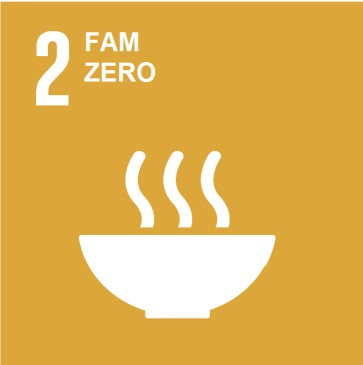


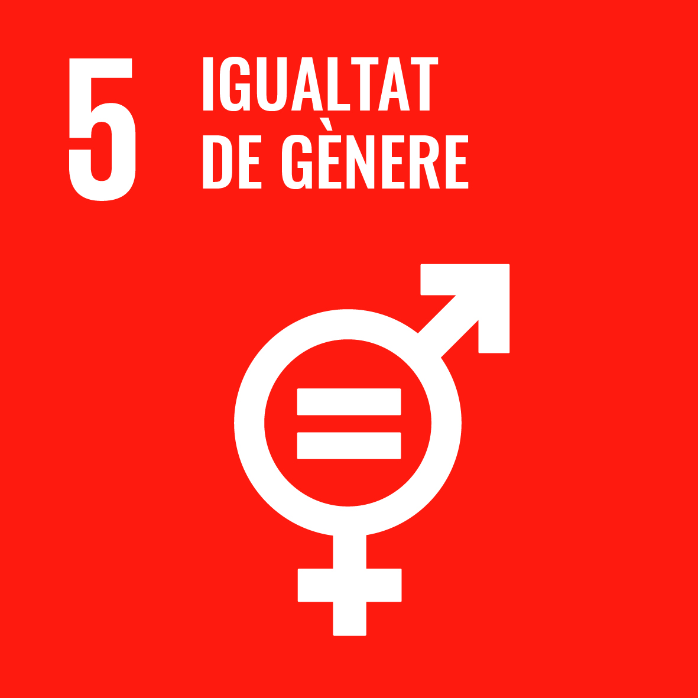
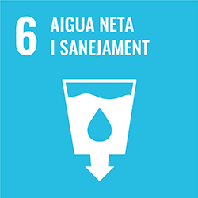
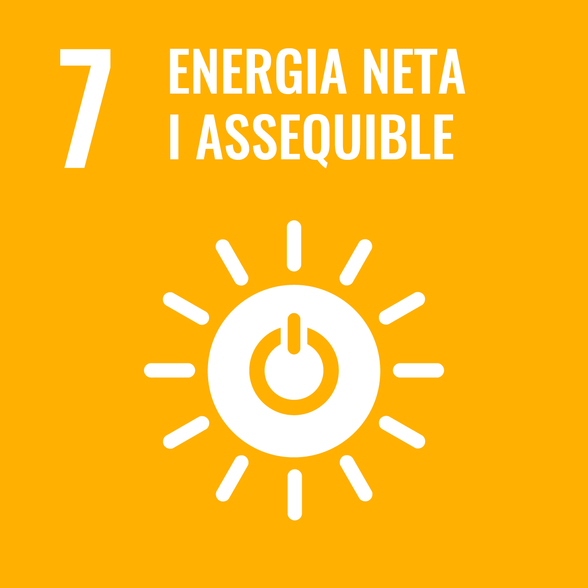
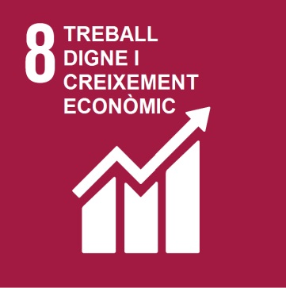
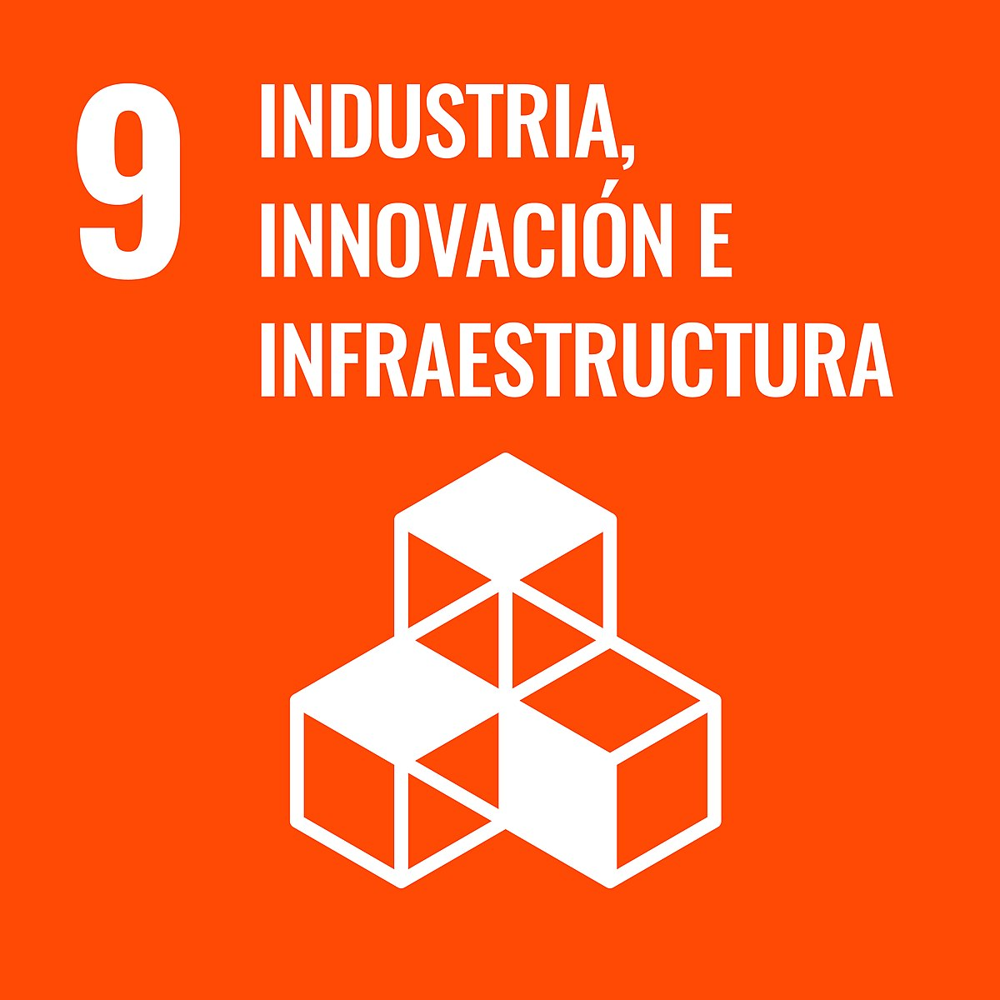
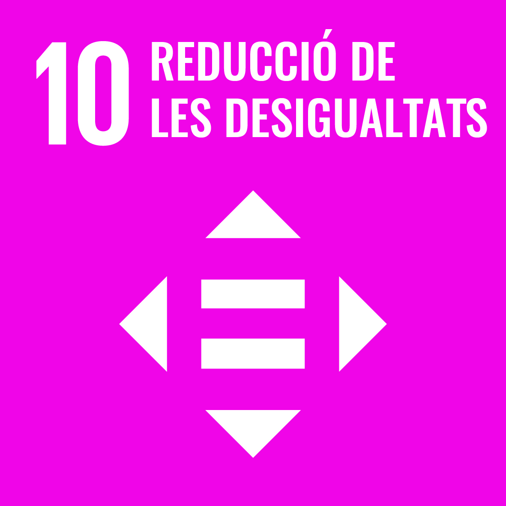
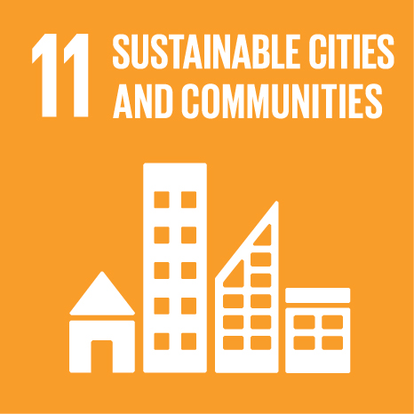
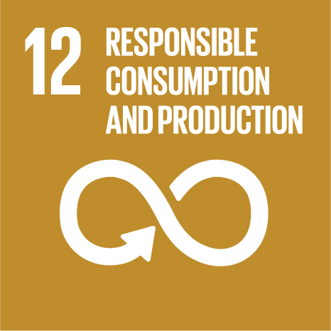
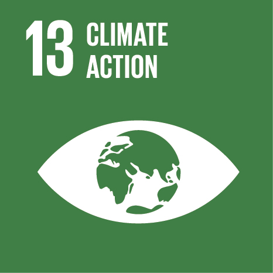
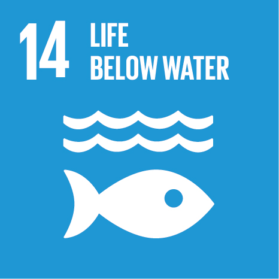
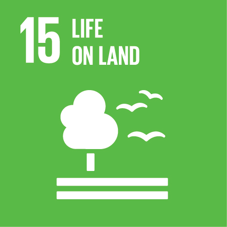
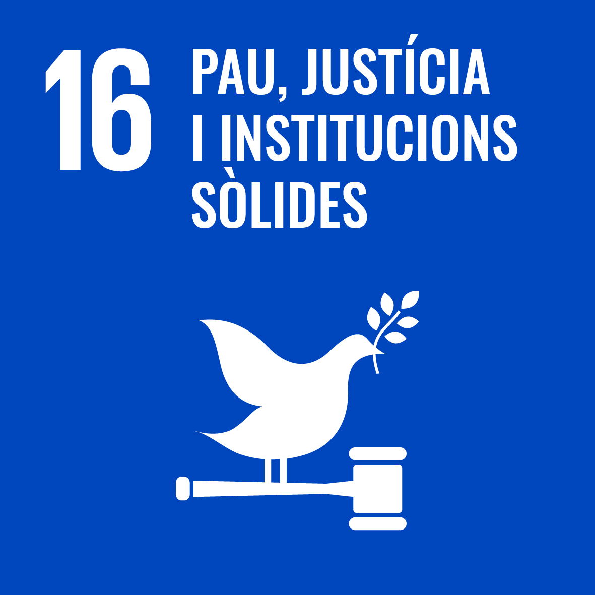

Vídeos disponibles en los materiales del curso. Iconos complementarios: Naciones Unidas.
Elige uno. Investígalo. Explícalo con tus palabras.
Una explicación de 2–3 minutos sin diapositivas, móvil, soporte visual ni lectura de un texto. No necesitas recitar: necesitas entender.
Antes de hablar → Consulta al menos dos fuentes fiables, una de Naciones Unidas. Conserva la fuente, el año y el ámbito geográfico de cada cifra. Prioriza comprender antes que memorizar estadísticas.
Después de escuchar → La clase puede hacer una pregunta breve: «¿Qué dato necesitarías para saber si tu ejemplo funciona?».
La sostenibilidad también pasa por un cable, una reparación o una decisión de compra.
Pulsa un ODS para descubrir un ejemplo SMX y una pregunta crítica.
Conexión SMX
Reacondicionar ordenadores para personas con pocos recursos.
Bajo la lupa → ¿Disponen también de conexión, mantenimiento y formación?
Conexión SMX
Mantener un sistema de inventario para un banco de
alimentos.
Bajo la lupa → ¿Ayuda a reducir pérdidas y mejorar el reparto?
Conexión SMX
Mantener equipos y redes de un centro sanitario.
Bajo la lupa → ¿Cómo se garantiza la disponibilidad y la privacidad?
Conexión SMX
Preparar equipos y una plataforma educativa accesible.
Bajo la lupa → ¿Todo el alumnado puede utilizarlos?
Conexión SMX
Organizar formación técnica y repartir tareas sin
estereotipos.
Bajo la lupa → ¿Quién participa y quién asume las tareas técnicas?
Conexión SMX
Instalar sensores y una red para detectar fugas.
Bajo la lupa → ¿El aviso se traduce en una reparación y ahorro comprobable?
Conexión SMX
Configurar la suspensión y el apagado de los equipos.
Bajo la lupa → ¿Cuánto consumo se evita al medir antes y después?
Conexión SMX
Analizar las condiciones laborales y la ergonomía de un
servicio técnico.
Bajo la lupa → ¿La productividad mejora también las condiciones de trabajo?
Conexión SMX
Diseñar una red fiable y reparable para una pequeña entidad.
Bajo la lupa → ¿Puede mantenerla con sus recursos?
Conexión SMX
Adaptar equipos y ofrecer alfabetización digital.
Bajo la lupa → ¿Se atienden barreras económicas, lingüísticas y de accesibilidad?
Conexión SMX
Mantener un punto público de acceso digital.
Bajo la lupa → ¿Llega a barrios y personas con menos alternativas?
Conexión SMX
Reparar, reutilizar y gestionar correctamente los residuos
electrónicos.
Bajo la lupa → ¿Se prolonga realmente la vida útil de los equipos?
Conexión SMX
Medir el consumo del aula y reducir usos innecesarios.
Bajo la lupa → ¿Qué emisiones se evitan según la electricidad utilizada?
Conexión SMX
Mantener sistemas de seguimiento de la calidad del agua
marina.
Bajo la lupa → ¿Los datos conducen a actuaciones contra la contaminación?
Conexión SMX
Dar soporte a sensores o cámaras de seguimiento de
biodiversidad.
Bajo la lupa → ¿La instalación minimiza sus propias molestias y residuos?
Conexión SMX
Proteger datos y configurar accesos y copias de seguridad en
una entidad pública.
Bajo la lupa → ¿Se combina seguridad, transparencia y accesibilidad?
Conexión SMX
Colaborar entre centro, ayuntamiento y entidad social para
reutilizar equipos.
Bajo la lupa → ¿Hay responsabilidades, mantenimiento y resultados compartidos?
Son ejemplos didácticos propuestos, no proyectos con eficacia demostrada. Consulta el objetivo completo y sus metas en Naciones Unidas.
Entender, concretar y argumentar. Tu opinión puede ser crítica: lo que cuenta es cómo la razonas.
| Criterio | Puntos | Qué se espera |
|---|---|---|
| Comprensión | 3 | Explicas correctamente qué busca el ODS y qué problema aborda, con palabras propias. |
| Importancia | 2 | Justificas por qué importa e identificas a quién o a qué afecta. |
| Ejemplo concreto | 3 | Presentas una actuación relacionada con SMX y explicas cómo contribuye al objetivo. |
| Claridad y opinión razonada | 2 | Organizas la explicación y apoyas tu valoración en razones, con algún límite o condición. |
Puntuación completa si el criterio está explicado y justificado; parcial si está incompleto; cero si está ausente o es incorrecto.
Empieza aquí. Comprueba siempre qué se mide, de qué año es y a qué población se refiere.